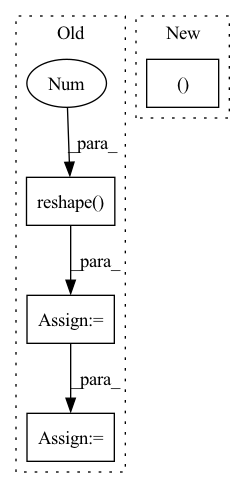

Pattern ID :3178
Before Change
def forward(self, input_dict, hidden_state, seq_lens):
inputs = input_dict["obs_flat"].float()
if "conv_layer" in self.custom_config["model_arch_args"]:
x = inputs.reshape(-1 , self.raw_state_dim[0], self.raw_state_dim[1], self.raw_state_dim[2]) .permute(0, 3, 1,
2)
x = self.encoder(x)
x = torch.mean(x, (2, 3))
x = x.reshape(inputs.shape[0], -1)
else:
x = self.encoder(inputs)
h_in = hidden_state[0].reshape(-1, self.hidden_state_size)After Change
def forward(self, input_dict, hidden_state, seq_lens):
inputs = input_dict["obs_flat"].float()
if len(self.full_obs_space.shape) == 3: // 3D
inputs = inputs.reshape((-1In pattern: SUPERPATTERN
Frequency: 3
Non-data size: 4
Instances Fragment ID: 10218331
Project Name: replicable-marl/marllib
Commit Name: b8e61fa5031b72cb8ce2321212fe3908f3468b83
Time: 2023-03-01
Author: hhhusiyi@163.com
File Name: marllib/marl/models/zoo/rnn/jointQ_rnn.py
M Class Name: JointQ_RNN
N Class Name: JointQ_RNN
M Method Name: forward(4)
N Method Name: forward(4)
M Parent Class: nn.Module,TorchModelV2
N Parent Class: nn.Module,TorchModelV2
M File Name: marllib/marl/models/zoo/rnn/jointQ_rnn.py
N File Name: marllib/marl/models/zoo/rnn/jointQ_rnn.py
M Start Line: 104
M End Line: 112
N Start Line: 57
N End Line: 60
Before Change
def forward(self, input_dict, hidden_state, seq_lens):
inputs = input_dict["obs_flat"].float()
if "conv_layer" in self.custom_config["model_arch_args"]:
x = inputs.reshape(-1 , self.raw_state_dim[0], self.raw_state_dim[1], self.raw_state_dim[2]) .permute(0, 3, 1, 2)
x = self.encoder(x)
x = torch.mean(x, (2, 3))
x = x.reshape(inputs.shape[0], -1)
else:
x = self.encoder(inputs)
h = hidden_state[0].reshape(-1, self.hidden_state_size) // fake a hidden state no useAfter Change
def forward(self, input_dict, hidden_state, seq_lens):
inputs = input_dict["obs_flat"].float()
if len(self.full_obs_space.shape) == 3: // 3D
inputs = inputs.reshape((-1 Fragment ID: 10218330
Project Name: replicable-marl/marllib
Commit Name: b8e61fa5031b72cb8ce2321212fe3908f3468b83
Time: 2023-03-01
Author: hhhusiyi@163.com
File Name: marllib/marl/models/zoo/mlp/jointQ_mlp.py
M Class Name: JointQ_MLP
N Class Name: JointQ_MLP
M Method Name: forward(4)
N Method Name: forward(4)
M Parent Class: nn.Module,TorchModelV2
N Parent Class: nn.Module,TorchModelV2
M File Name: marllib/marl/models/zoo/mlp/jointQ_mlp.py
N File Name: marllib/marl/models/zoo/mlp/jointQ_mlp.py
M Start Line: 104
M End Line: 111
N Start Line: 59
N End Line: 62
Before Change
encoderIn = xRaw.permute(2, 3, 0, 1)
// [h, w, n, c] -> [h*w, n, c]
posisted = self._position(encoderIn).reshape(-1, n, c)
encoderIn = encoderIn.reshape(-1 , n, c)
// [h*w, n, c]
x = self._encoder(posisted, codewords[:, None, ...].expand(k, n, c))
// [h*w, n, k] -> [n, h*w, k]
logit = prob(x).permute(1, 0, 2)
sample = F.gumbel_softmax(logit, temperature, hard)
// [N, h*w, c] <- [N, h*w, k] @ [k, C]
// quantized = codebook(sample)
// [n, h*w, k] -> [h*w, n, k]
quantized = sample.permute(1, 0, 2)
quantized /= (k - 0.5) / (2 * k - 2)
quantized -= 0.5 / (k - 1)
// [h*w, n, c]
quantized = squeeze(quantized)
mixed = (mixin * encoderIn / (mixin + 1)) + (quantized / (mixin + 1))
// [h*w, n, c] -> [n, h*w, c] -> [n, h, w, c]
deTransformed = self._decoder(mixed).permute(1, 0, 2).reshape(n, h, w, c)After Change
quantizeds.append(deTransformed)
codes.append(sample)
logits.append(logit.reshape(n, h, w, k))
return quantizeds, codes, logits
Fragment ID: 10218320
Project Name: xiaosu-zhu/mcquic
Commit Name: 88c0e55a6d3e3a8122b70a58818e67d11ba9055b
Time: 2021-01-27
Author: xiaosu.zhu@outlook.com
File Name: src/mcqc/models/quantizer.py
M Class Name: TransformerQuantizer
N Class Name: TransformerQuantizer
M Method Name: forward(5)
N Method Name: forward(5)
M Parent Class: nn.Module
N Parent Class: nn.Module
M File Name: src/mcqc/models/quantizer.py
N File Name: src/mcqc/models/quantizer.py
M Start Line: 239
M End Line: 274
N Start Line: 267
N End Line: 305